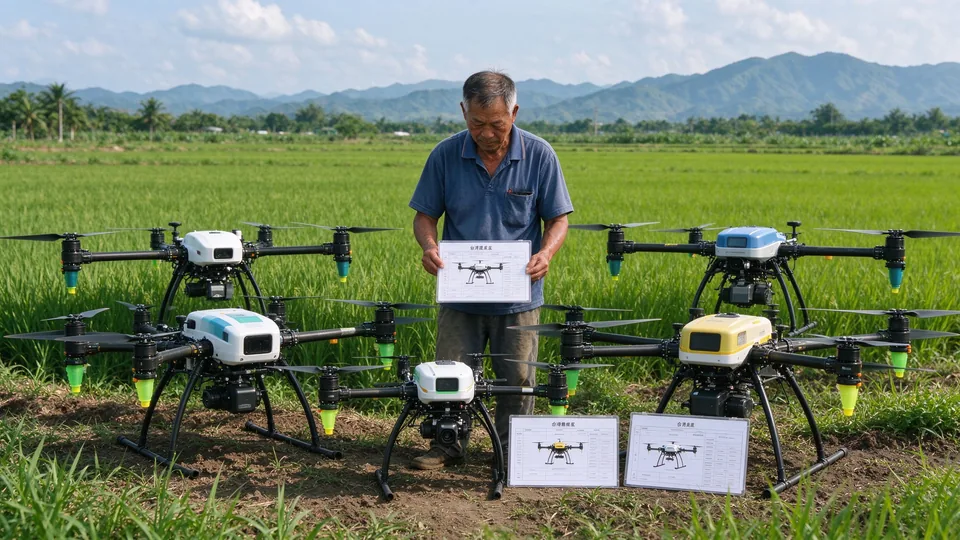
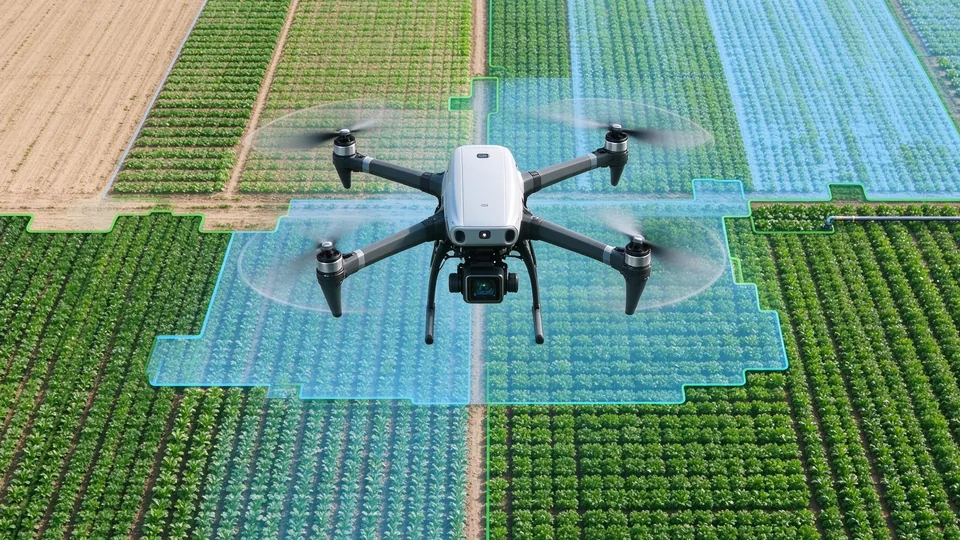
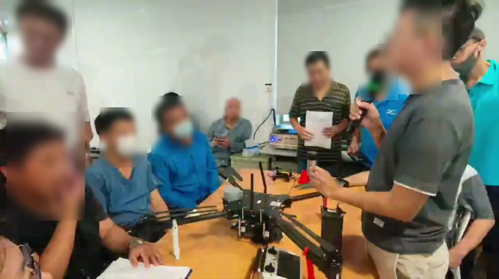
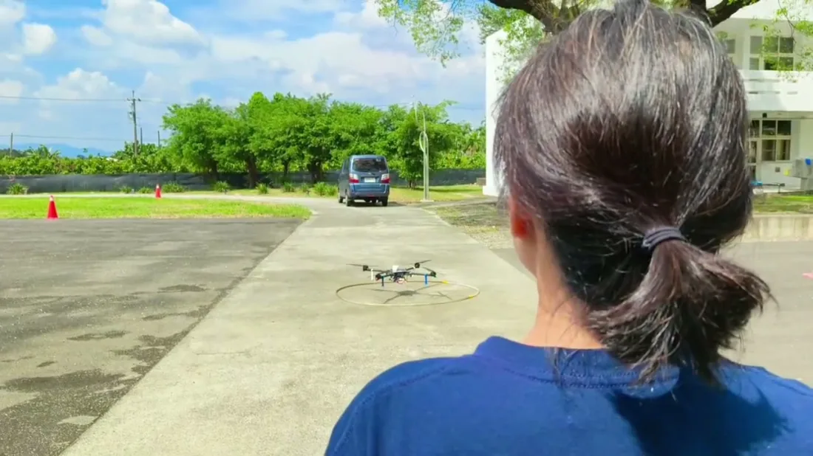
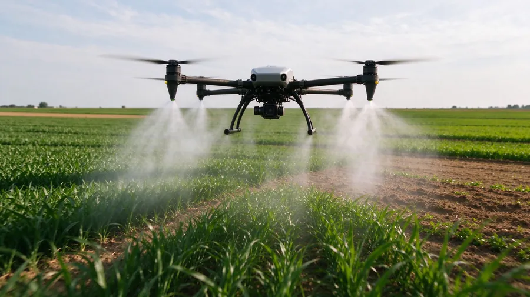
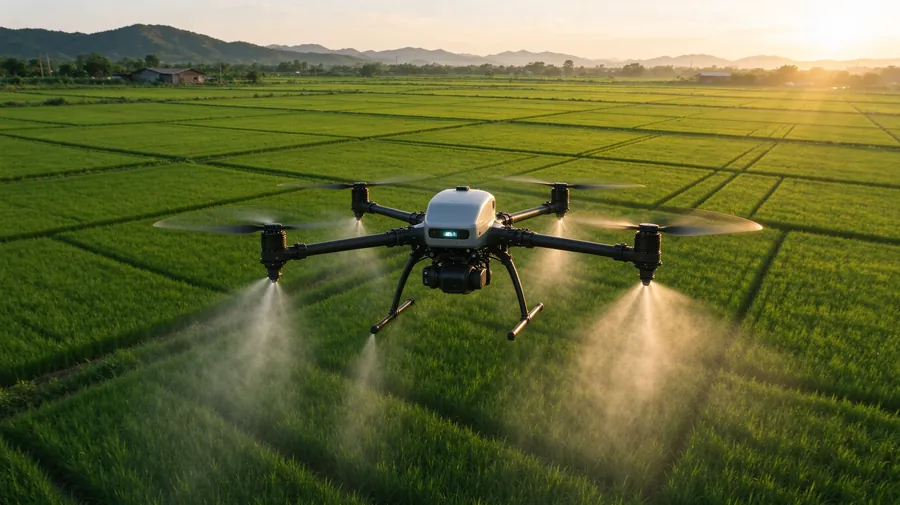
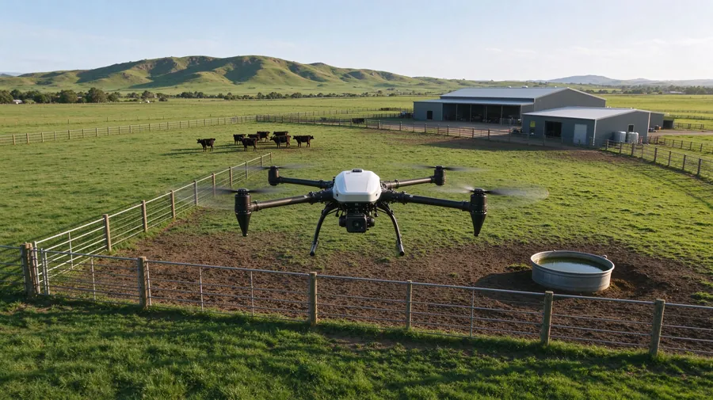
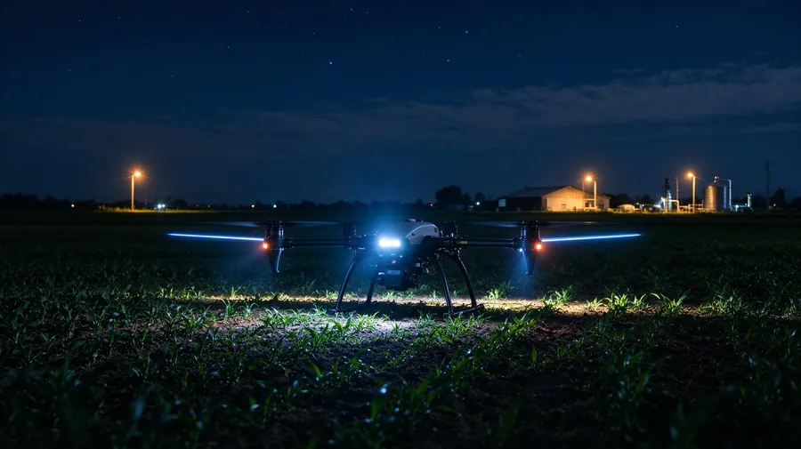
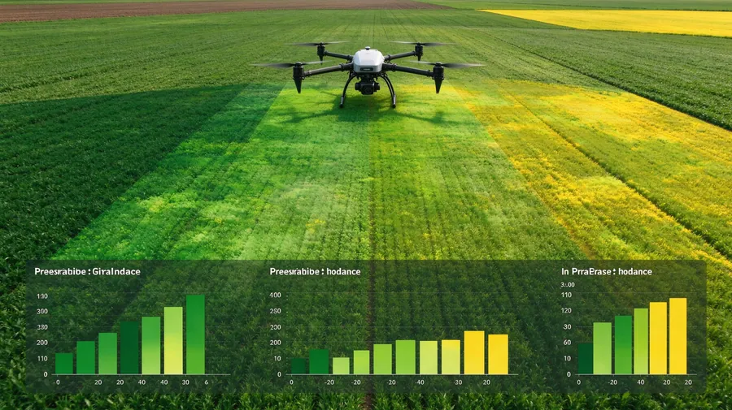
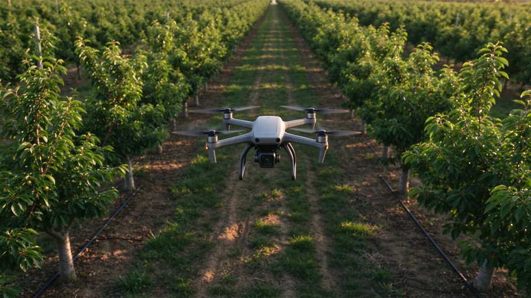

翔農氏Blog
精選 6 篇：blog 3 篇＋屏東培訓班專題 3 篇，點卡片展開摘要。
 農用無人機的未來發展趨勢是什麼？AI自主、感測融合、低空產業與在地挑戰完整解析
農用無人機的未來發展趨勢是什麼？AI自主、感測融合、低空產業與在地挑戰完整解析
農用無人機不再只是噴藥工具！解析 AI 邊緣運算、感測酬載融合、動力進化、機巢群飛、雲端平台與服務模式六大趨勢，同時拆解台灣在地農業的機會與瓶頸，並給農民務實建議。
閱讀全文 →

農用無人機怎麼選？自用/接案採購全攻略｜預算、機型、補助、風險一次看懂
買農用無人機不要只看藥箱容量！拆解自用、接案不同需求，機型規格對照、隱藏預算、台灣補助申請條件、購買前檢查清單，以及新機/二手機/租機三種模式比較。
閱讀全文 →

民航局遙控無人機操作證怎麼考？2024年12月版流程圖白話全攻略
想用無人機做農噴、測繪或商用飛行，第一步幾乎都是「先拿操作證」。這篇文章用大白話，把 2024 年 12 月版民航局考試流程圖拆開講清楚：從學科筆試、用途分流、術科實測，到基本級晉升高級的持證時長與考照機型規格。
閱讀全文 →
 普通操作證與專業操作證差在哪？級別、噸位與教學資格一次看懂
普通操作證與專業操作證差在哪？級別、噸位與教學資格一次看懂
依民航局操作證測驗與給證須知整理：學習、普通、專業三種操作證的年齡、噸位界線、級別代碼（I、Ia、Ib、II、III）與教學資格，附申請費用與效期。
閱讀全文 →

升力、阻力與速度平方：無人機學科最常考的空氣動力觀念
用題庫實例拆解升力與阻力都和速度平方成正比、空氣密度與溫度成反比、高度每上升 1000 呎氣壓少約 1 吋汞柱等觀念，並說明為什麼風大時耗電更快。
閱讀全文 →

40 天、280 節怎麼排？無人機培訓課表的五段推進邏輯
以 115 年屏東 AI 智慧農業無人機操控培訓班為例，拆解 63／35／63／105／14 節的五階段安排：法規學科、模擬與用藥、基本級到高級 1a/1b、考照模擬與農務實作、點雲與就業輔導。
閱讀全文 →六大主題支柱
你想先從哪裡認識無人機？
本站採「權重金字塔」的資訊架構：首頁只放六大支柱入口，深入內容由各支柱頁面與側邊欄承接，方便你沿著分類一步步往下讀。






需要協助導入或外包噴藥？
無論你是農民、飛手，還是想認識無人機的讀者，都可以與我們聯繫。本站不代購、不代飛，僅提供知識整理與諮詢指引。